KABUPATEN PINRANG
Wajah Virtual Disperindag ESDM Kabupaten Pinrang
Dokumen tentang peran dinas dalam pembangunan dan pelayanan masyarakat, serta bagaimana portal digital menghadirkan tugas tersebut secara terbuka, mudah dijangkau, dan dapat dipahami.
Dinas hadir lebih dekat melalui ruang digital
Dinas Perindustrian, Perdagangan, Energi dan Sumber Daya Mineral Kabupaten Pinrang merupakan unsur pelaksana Pemerintah Kabupaten Pinrang yang membantu Bupati menangani urusan perindustrian, perdagangan, kemetrologian, serta energi dan sumber daya mineral sesuai kewenangan daerah.
Mendorong ekonomi daerah
Membina industri kecil dan menengah, memperluas promosi produk lokal, serta memperkuat daya saing pelaku usaha Pinrang.
Menjaga perdagangan sehat
Memantau harga dan pasokan, menata sarana perdagangan, melindungi konsumen, dan menjaga alat ukur tetap adil.
Mengawal layanan energi
Memantau penyaluran LPG dan BBM bersubsidi, menindaklanjuti aduan, dan berkoordinasi sesuai pembagian kewenangan.
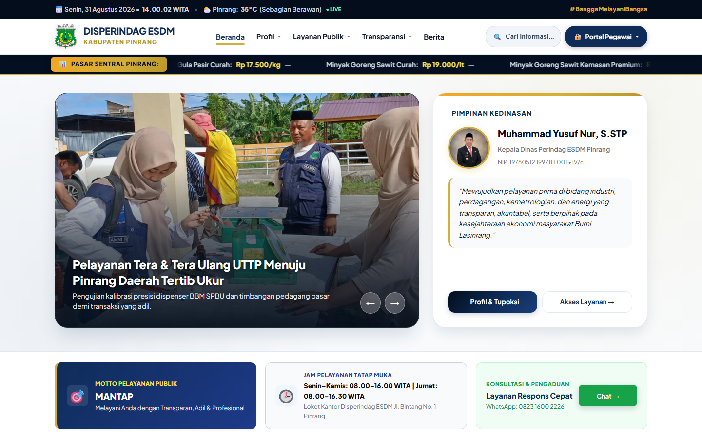
Mandat luas yang menyentuh kehidupan sehari-hari
Ruang lingkup Disperindag ESDM dekat dengan kegiatan masyarakat: harga pangan di pasar, ketepatan timbangan, pengembangan usaha kecil, kelayakan sarana perdagangan, hingga ketersediaan energi bersubsidi. Karena itu, wajah digital dinas harus menjelaskan pekerjaan tersebut secara utuh.
Perindustrian dan IKM
Pembinaan industri kecil dan menengah, pengembangan sentra, peningkatan mutu dan kemasan, serta fasilitasi legalitas dan sertifikasi produk.
Pengembangan Perdagangan
Pemantauan bahan pokok penting, kestabilan pasokan dan harga, pengendalian inflasi, promosi produk daerah, dan perlindungan konsumen.
Kemetrologian
Pelayanan tera dan tera ulang alat ukur, takar, timbang dan perlengkapannya agar masyarakat dan pelaku usaha memperoleh transaksi yang adil.
Sarana dan Pelaku Distribusi
Pengelolaan pasar rakyat, penataan pedagang, pembinaan pergudangan, toko swalayan, dan kelancaran rantai distribusi.
Energi dan Sumber Daya Mineral
Pemantauan LPG 3 kg dan BBM bersubsidi, verifikasi lapangan, penerimaan aduan, serta koordinasi dengan pemerintah dan badan usaha terkait.
Sekretariat dan PPID
Perencanaan, keuangan, kepegawaian, persuratan, pelaporan, kehumasan, keterbukaan informasi, dan koordinasi seluruh pelayanan dinas.
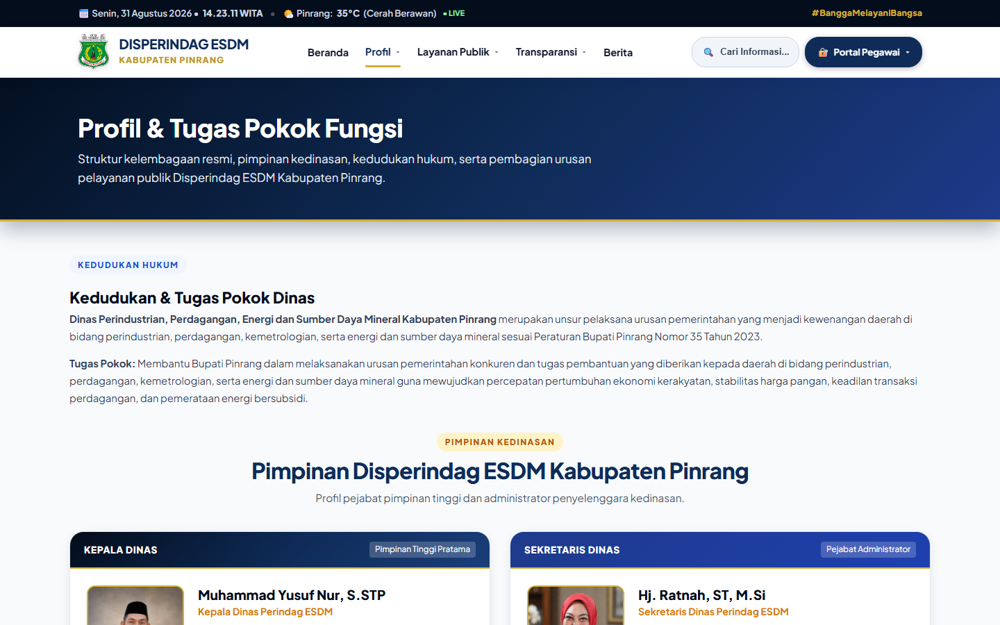
Dari tugas pemerintahan menjadi manfaat yang dirasakan masyarakat
Tugas dinas tidak berhenti pada administrasi. Hasil akhirnya harus terlihat dalam pasar yang lebih tertib, harga yang terpantau, usaha lokal yang berkembang, transaksi yang adil, energi yang tersalurkan dengan baik, dan informasi yang mudah diperoleh.
Stabilitas dan keterjangkauan
Pemantauan harga, koordinasi pasokan, serta kegiatan pasar murah membantu menjaga daya beli masyarakat.
Daya saing usaha lokal
Pendampingan legalitas, sertifikasi, mutu, promosi, dan katalog produk membantu IKM tumbuh dan menjangkau pasar.
Keadilan dalam transaksi
Tera dan tera ulang memastikan timbangan, dispenser BBM, dan alat ukur lainnya bekerja dalam batas yang benar.
Pasar yang tertib dan layak
Penataan sarana, zonasi, sanitasi, keamanan, dan pembinaan pedagang mendukung kenyamanan jual beli.
Energi bersubsidi tepat sasaran
Pengawasan dan koordinasi membantu mencegah penyimpangan serta mempercepat tindak lanjut keluhan masyarakat.
Keterbukaan dan respons
Standar layanan, berita, dokumen PPID, kontak, serta kanal pengaduan memperkuat hubungan dinas dengan masyarakat.
Website sebagai kantor, etalase, pusat informasi, dan ruang pengawasan
Kantor pelayanan virtual
Masyarakat dapat memahami layanan, menyiapkan persyaratan, melihat jam pelayanan, dan memilih saluran komunikasi sebelum datang ke kantor.
Etalase potensi daerah
Produk IKM, kegiatan pembinaan, pasar rakyat, dan berita pembangunan diperkenalkan kepada khalayak yang lebih luas.
Pusat informasi resmi
Harga, direktori, regulasi, dokumen, berita, dan status layanan disajikan dengan sumber serta tanggal yang dapat diperiksa.
Ruang partisipasi publik
Kontak, pengaduan, permohonan informasi, serta koreksi lapangan membuka ruang komunikasi dua arah.
Alat kerja petugas
Panel pengelola membantu setiap bidang memperbarui informasi sesuai tanggung jawabnya tanpa membuat versi data yang berbeda.
Ruang pantau pimpinan
Ringkasan dan peta membantu melihat keadaan lintas bidang, bagian yang membutuhkan perhatian, dan laporan yang belum tersedia.
Fitur sebagai perwujudan tugas dan pelayanan dinas
Setelah memahami peran dinas, bagian berikut menunjukkan bagaimana setiap tugas dihadirkan dalam bentuk halaman dan layanan digital.
Beranda
Pintu masuk untuk berita utama, informasi harga singkat, profil dinas, jam layanan, dan jalur konsultasi.
Layanan Publik
Menjelaskan jenis layanan, persyaratan, langkah pelayanan, waktu penyelesaian, dan saluran pengaduan.
Harga Bahan Pokok
Menampilkan harga dari SP2KP Kementerian Perdagangan beserta arah perubahan dan waktu pengamatan.
Direktori Pasar
Mengenalkan pasar di Kabupaten Pinrang, status operasional, jadwal, lokasi, dan informasi pengelolaan.
Direktori LPG 3 Kg
Memuat agen serta pangkalan, wilayah layanan, dan kualitas titik lokasi yang masih perlu diperiksa.
Direktori Penyalur BBM
Memuat SPBU, SPBUN, SPBU Kompak/APMS, dan Pertashop beserta produk, alamat, serta petanya.
Peta GIS
Menyatukan pasar, agen dan pangkalan LPG, serta penyalur BBM pada satu peta dengan pilihan lapisan.
PPID Pelaksana
Menyediakan informasi publik, dokumen, regulasi, dan penjelasan tata cara memperoleh informasi.
Command Center
Ringkasan visual untuk pemantauan pimpinan. Angka akan tampil sesuai laporan yang tersedia saat itu.
Media Intelligence
Membantu melihat perkembangan pemberitaan dan isu publik dari sumber yang telah dipantau.
Membaca harga resmi dan perubahannya
Halaman harga memakai informasi SP2KP Kementerian Perdagangan. Pengunjung dapat memilih komoditas dan tanggal, melihat perbandingan wilayah, mengikuti grafik perkembangan, serta mencari kartu harga yang dibutuhkan.
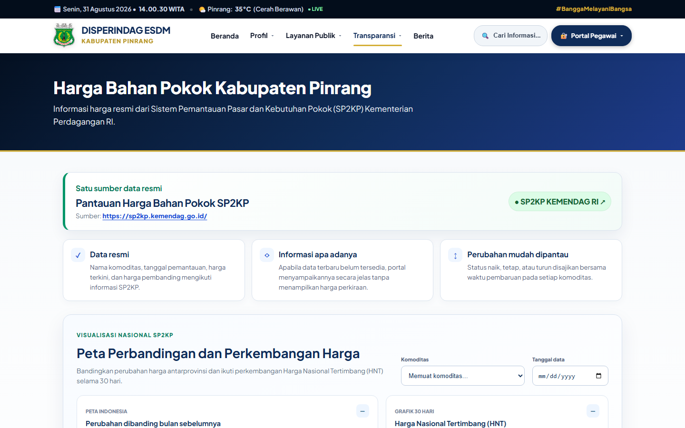
Naik
Harga terbaru lebih tinggi daripada harga pembanding. Ditampilkan dengan arah ke atas dan warna yang mudah dibedakan.
Tetap
Tidak ada perubahan terhadap harga pembanding pada data yang tersedia.
Turun
Harga terbaru lebih rendah daripada harga pembanding. Ditampilkan dengan arah ke bawah.
Mencari pasar, LPG, dan penyalur BBM
Tiga direktori disusun dengan pola yang serupa: peta, pencarian, penyaring wilayah/status, kartu atau tabel informasi, dan tautan menuju lokasi. Pengguna tidak perlu memahami istilah pemetaan untuk memakainya.
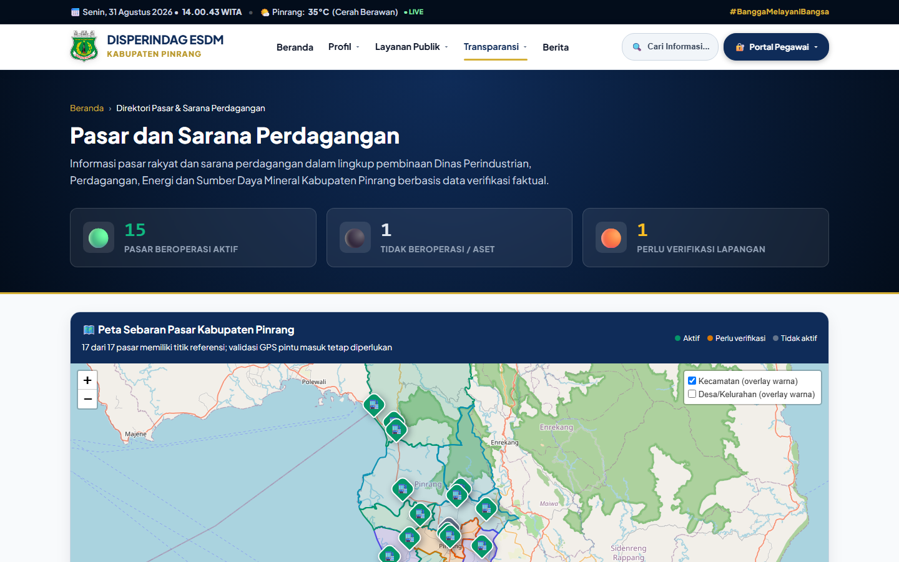
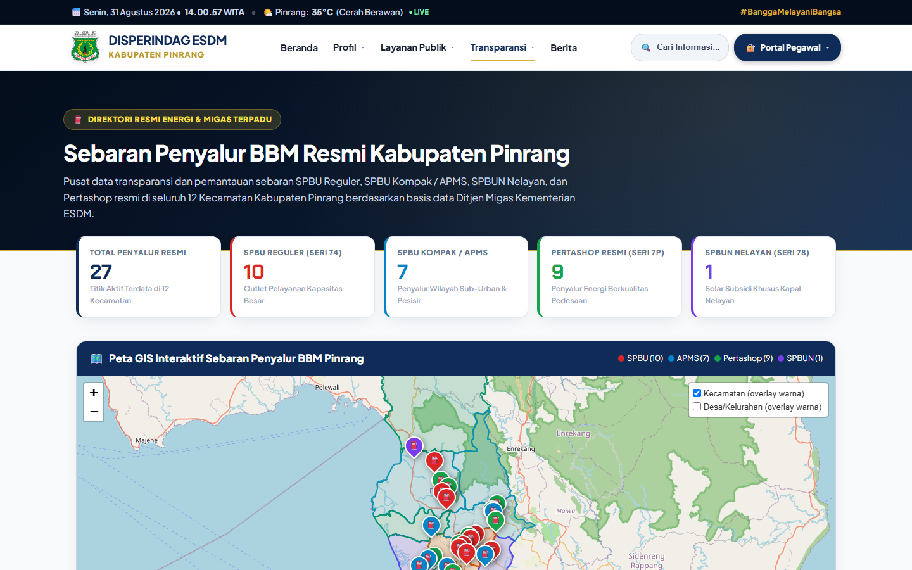
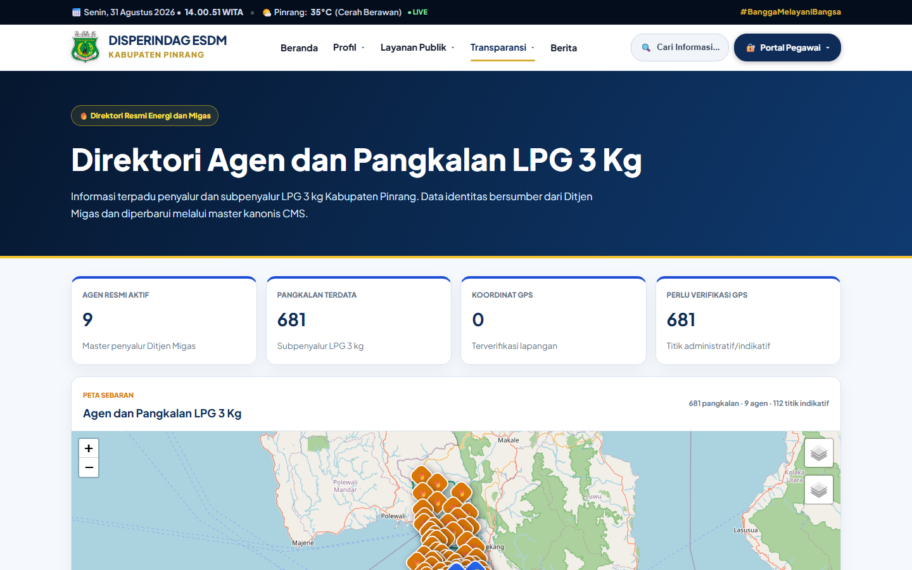
Langkah pencarian yang disarankan
- Ketik nama tempat, desa, kecamatan, kode, atau nama pengelola pada kotak pencarian.
- Gunakan penyaring untuk mempersempit hasil.
- Klik penanda peta atau buka profil untuk membaca rinciannya.
- Gunakan tautan Google Maps sebagai bantuan arah, kemudian cocokkan kembali alamat di lapangan.
Melihat sebaran layanan dalam satu layar
Peta GIS menyatukan data lintas bidang. Setiap kelompok memakai lambang dan warna berbeda, sedangkan batas kecamatan serta desa/kelurahan ditempatkan di bawah penanda lokasi.
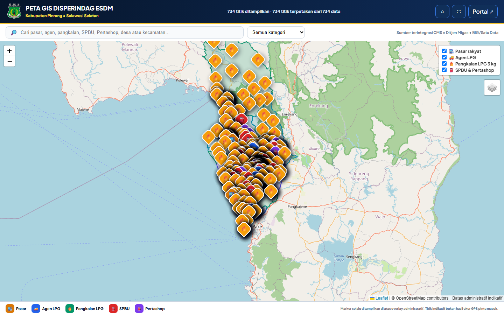
Menyiapkan keperluan sebelum datang ke kantor
Halaman Layanan Publik membantu masyarakat mengetahui apa yang harus disiapkan, ke mana permohonan disampaikan, dan bagaimana menyampaikan pengaduan.
- Pilih jenis layanan yang dibutuhkan.
- Baca syarat dan urutan pelayanan.
- Periksa waktu layanan dan kontak.
- Simpan atau cetak informasi bila diperlukan.
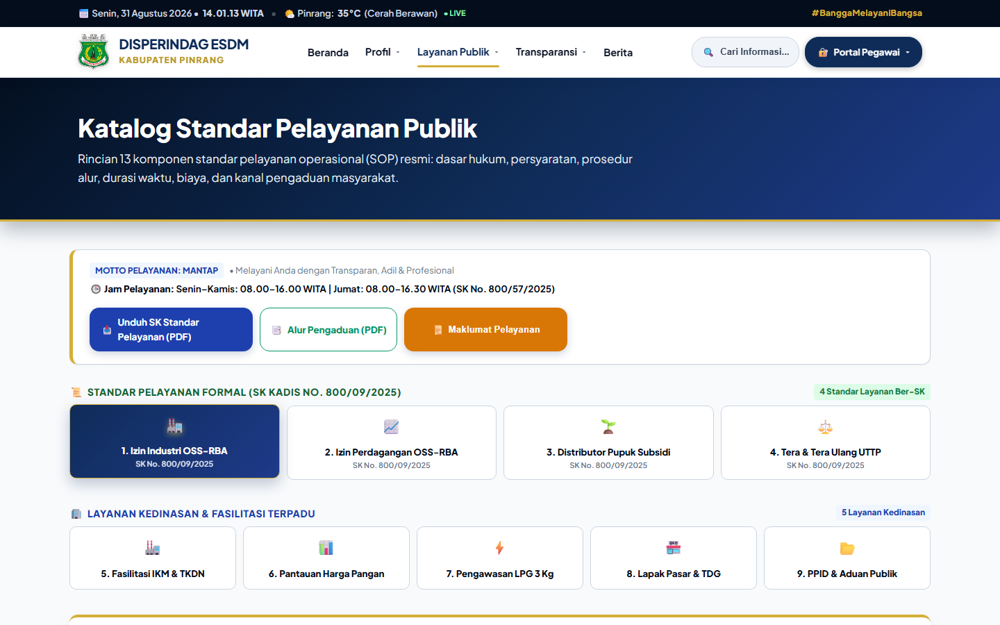
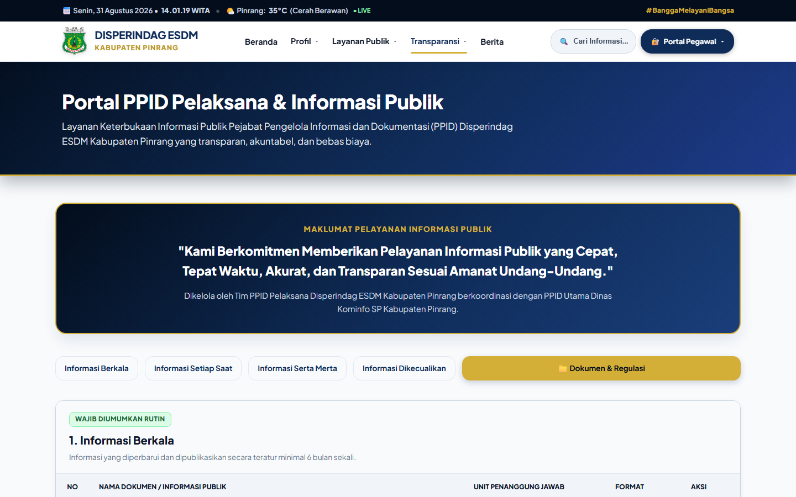
Dokumen dan keterbukaan informasi
Dokumen dan regulasi ditempatkan bersama PPID Pelaksana agar masyarakat tidak perlu mencari pada dua halaman berbeda.
Ringkasan untuk melihat keadaan secara cepat
Command Center menyajikan ringkasan lintas bidang dalam tampilan layar penuh. Media Intelligence melengkapi pemantauan dengan gambaran pemberitaan dan isu yang sedang berkembang.
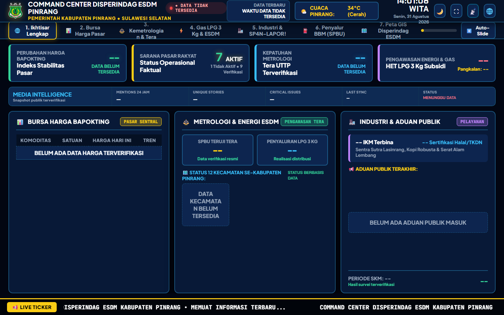
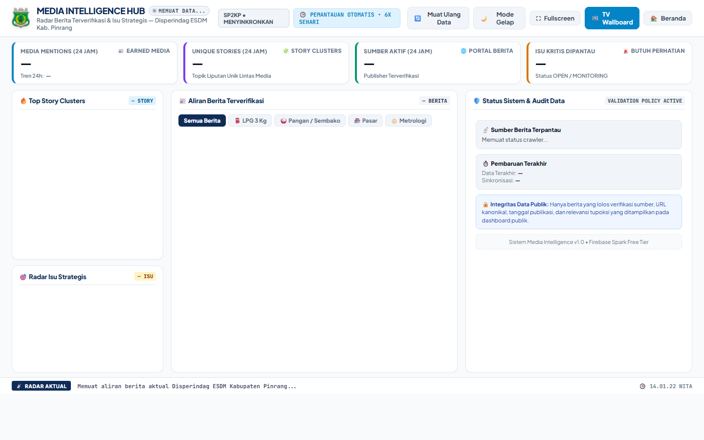
Bagaimana perubahan data sampai ke masyarakat
Petugas membandingkan dokumen, sumber resmi, dan hasil lapangan.
Petugas mengubah data pada bagian Pasar, LPG, BBM, berita, atau layanan yang sesuai.
Direktori, peta, dan ruang pemantauan membaca sumber yang sama.
Arti status yang umum
Terverifikasi
Informasi telah melalui pemeriksaan sesuai dasar yang dicatat.
Perlu verifikasi
Data berguna sebagai petunjuk awal, tetapi belum layak dianggap final.
Tidak aktif
Riwayat tetap disimpan, namun objek tidak dihitung sebagai layanan aktif.
Siapa dapat memakai informasi ini?
Masyarakat
Mencari layanan, harga bahan pokok, pasar, pangkalan LPG, penyalur BBM, berita, kontak, dan dokumen publik.
Pelaku usaha
Memahami layanan perizinan/fasilitasi, informasi pasar, kemetrologian, serta kanal konsultasi.
Petugas lapangan
Membandingkan daftar dan lokasi, mengenali titik yang perlu diverifikasi, lalu menyampaikan koreksi melalui CMS.
Pimpinan
Melihat ringkasan cepat, sebaran layanan, kecenderungan harga, serta bagian yang belum memiliki laporan.
PPID dan pengelola layanan
Menjelaskan standar layanan, menyediakan dokumen, dan membantu permohonan informasi.
Media dan peneliti
Menggunakan informasi publik dengan tetap mencantumkan sumber, tanggal, dan status verifikasi.
Daftar pemeriksaan sebelum mengutip data
- Pastikan nama halaman dan objek sudah benar.
- Periksa tanggal atau waktu pembaruan.
- Baca sumber yang dicantumkan.
- Perhatikan status terverifikasi, kandidat, atau belum tersedia.
- Untuk keputusan penting, lakukan konfirmasi kepada dinas.
Menggunakan dokumen ini sebagai PDF
Unduh langsung
Gunakan tombol Unduh PDF di bagian atas. Berkas telah disiapkan dalam ukuran A4 dengan margin yang aman untuk pencetakan.
Buat PDF terbaru dari browser
Pilih Cetak / Simpan PDF, gunakan tujuan “Save as PDF”, ukuran A4, skala 100%, dan aktifkan gambar latar belakang.
Catatan: angka, status, cuaca, berita, dan isi pemantauan dapat berubah setelah dokumen ini diterbitkan. Selalu buka portal untuk melihat keadaan terbaru.
Pelayanan informasi yang terbuka, mudah dipahami, dan dapat diperiksa
Portal Disperindag ESDM Kabupaten Pinrang dirancang sebagai jembatan antara data kedinasan dan kebutuhan masyarakat. Gunakan informasi sesuai status dan tanggalnya, serta sampaikan koreksi apabila menemukan perbedaan dengan keadaan lapangan.
Portal
disperindagesdm-pinrang.web.app
WhatsApp Layanan
0823 1600 2226
Alamat
Jalan Bintang No. 1, Kabupaten Pinrang, Sulawesi Selatan
Dokumen panduan resmi portal · Edisi 31 Agustus 2026